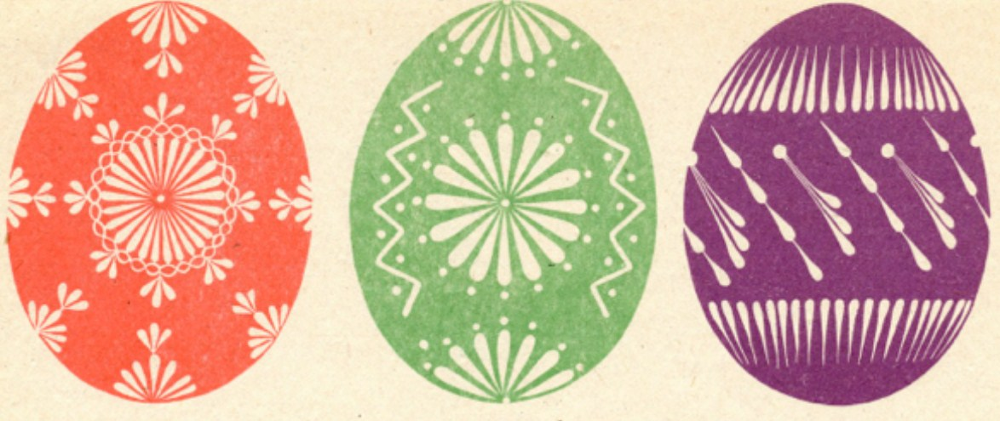

Лемківщина
Лемки завжди надавали перевагу одно- та двотонним писанкам: червоним, жовтим, оранжевим, зеленим, блакитним та білим. А от чорний колір тут рідкість. Зображають на великодніх яєчках, зазвичай, сонечка, зірки, хрестики та троянди, більш знані тут як ружі.
